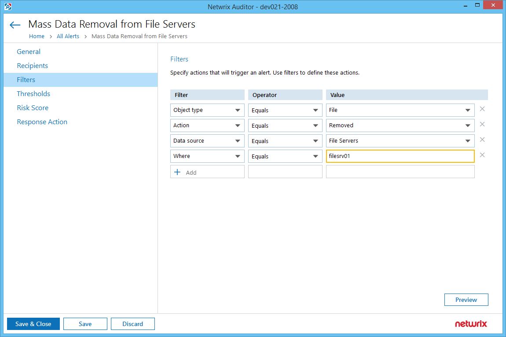

Overview
This article explains how to set up a response action in Netwrix Auditor alert to move an AD user account to the quarantine Organizational Unit (OU). Read more about alert response action settings in the Administration – Alerts – Configure a Response Action for Alert ⸱ v10.6 article.A quarantine OU is an OU with restrictive policies applied, used to limit access to sensitive and business-critical resources. Removal of a significant number of files from a file server within a short period of time may indicate potentially harmful user activity. To mitigate the risks of account usage with malicious intent, it is recommended to move suspicious user accounts to the quarantine OU. With this measure, you can limit user privileges without deleting the account from Active Directory. With Netwrix Auditor alerting and response action feature, you can automate and verify this course of action. To simulate suspicious activity and trigger the response action, you can do the following:
Step 1. Check prerequisites and take preparatory steps, as described below.IMPORTANT. It is strongly recommended that before implementing this course of action in your production environment, you perform these steps in your test lab. Please also note that we are only performing the moving action, creating/designating a Quarantine OU is not included in this procedure.
Step 2. Modify the PowerShell script provided later in this document and save it to Netwrix Auditor server.
Step 3. Enable the Mass Data Removal from File Servers alert in Netwrix Auditor and configure response action for this alert to run the PowerShell script.
Step 4. On your file server, create 10+ files, then remove these files using test AD user account.
Step 5. Wait for notification on the alert triggering and check response action results in the Active Directory Users and Computers.
Instructions
Step 1. Check Prerequisites
Make sure the following is present in the test AD domain:- Test AD user account
- Quarantine OU
- A privileged account with sufficient rights to move AD users to the quarantine OU " you may need a domain administrator account for that purpose.
- Active Directory Module for Windows PowerShell is installed and enabled. For example, to enable this module on Windows Server 2016:
- Go to Server Manager, click Manage.
- Select Features > Remote Server Administration Tools > Role Administration Tools > AD DS & AD LDS Tools > Active Directory module for Windows PowerShell.
- Complete the wizard to save the settings.
- The file server you want to monitor for file deletions is included in the corresponding monitoring plan; data collection is enabled, and audit data is stored to the database.
Step 2. Prepare a PowerShell Script
-
With a plain text editor (e.g. Notepad), copy the script content provided below; in the
$OUTargetPath parameter specify the distinguished name of your
quarantine OU (the name to modify is colored red).
#Target OU $OUTargetPath = "OU=q,DC=DC11,DC=Loc" $PathToCSV = "$Args" $scriptdir=$PSScriptRoot $PathToResultFile = Join-Path $scriptdir "result" $PathToResultFile = (Copy-Item -Path $PathToCSV -Destination $PathToResultFile -PassThru) $csv = Import-Csv -Path $PathToResultFile -Delimiter "`t" $Who = $csv | Select Who| Sort-Object -Property Who -Unique foreach ($item in $Who) { Move-ADObject (Get-ADUser -Identity ((New-Object System.Security.Principal.NTAccount($item."Who")).Translate([System.Security.Principal.SecurityIdentifier])).Value).DistinguishedName -TargetPath $OUTargetPath } - Save the customized script as a .PS1 file in a folder on Netwrix Auditor server.
Step 3. Configure the Alert
- In Netwrix Auditor, go to Alerts and select Mass Data Removal from File Servers
- On the General tab, turn alerting on.
- On the Recipients tab, specify your email address to get a notification on the alert triggering.
-
On the Filters tabs, in the Where field, specify the
name of file server you will be monitoring:
 - On the Thresholds tab, leave the default values " the alert will be triggered if 10+ files are created by the same user within 600 seconds.
-
On the Response Action tab, do the following:
- Enable the response action by switching the slider ON.
- In the Run field, specify the path to the executable file as in your system " in our example this is C:WindowsSystem32WindowsPowerShell1.0powershell.exe.
- In the With parameters field, enter: -command <path_to_PS1_file> here path_to_PS1_file is the path to PowerShell script you prepared at Step 2.
- Leave the Working directory field as is.
- Select Write data to CSV file option, leave Limit row count as is.
- Select Use custom credentials and enter the account that will be used to move the suspicious user to the quarantine OU (see Step 1, #3). In our example, this is dc11administrator.
Step 4. Create and Delete Files
- On the file server, create 10 or more files. (To access the file server, use any account with sufficient rights - (other than test AD user account).
- On Netwrix Auditor server, update the related monitoring plan to collect the latest audit data (alternatively, you can wait about 10 minutes for automatic data collection to complete).
- Then use test AD user account to delete these files; this operation should not take more than 600 seconds (for the alert to be triggered).
- Back on the Netwrix Auditor server, update the related monitoring plan to collect the latest audit data. After it is collected, monitoring plan status will change from Working to Enabled.
Step 5. Verify Response Action Results
- Open the mailbox of the alert recipient you specified at Step 3 and make sure the notification on the "Mass Data Removal from File Servers" alert was received.
- Use the domain admin account to log on to domain controller, open Users and Computers snap-in and check that test AD user account is now in the quarantine OU.
NOTE. You may need to wait several minutes until moving to the quarantine OU completes. After verifying this course of action in your lab, you can implement it in the production environment, skipping Step 4 (simulation of suspicious actions).